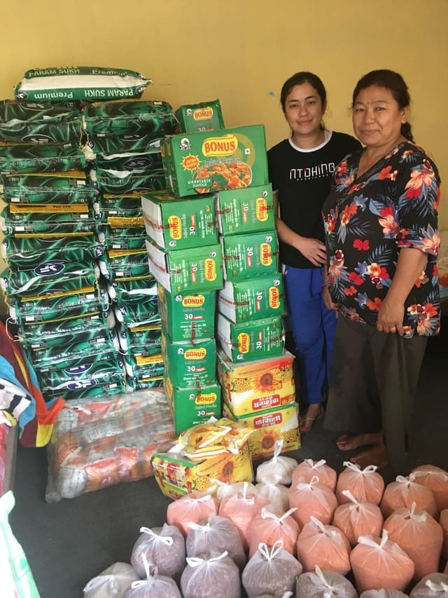
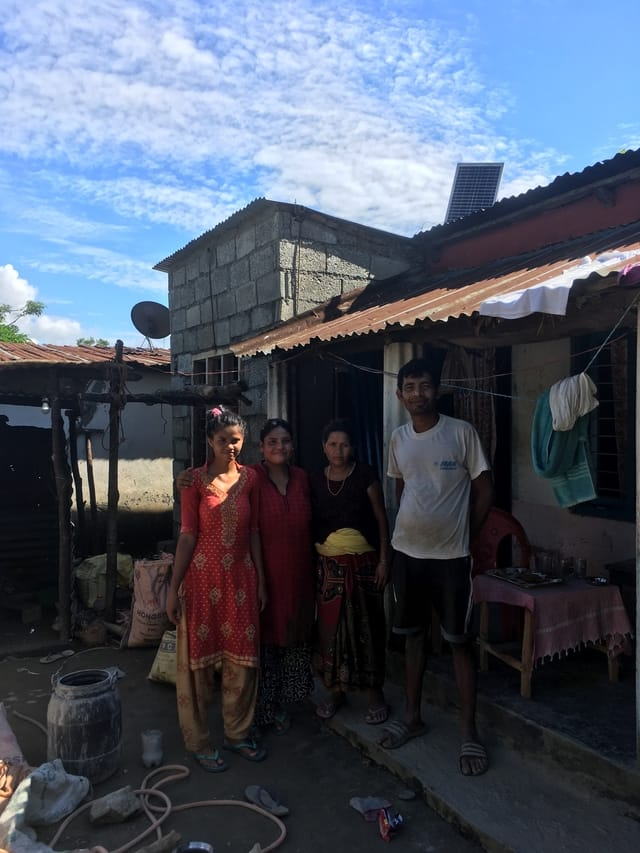
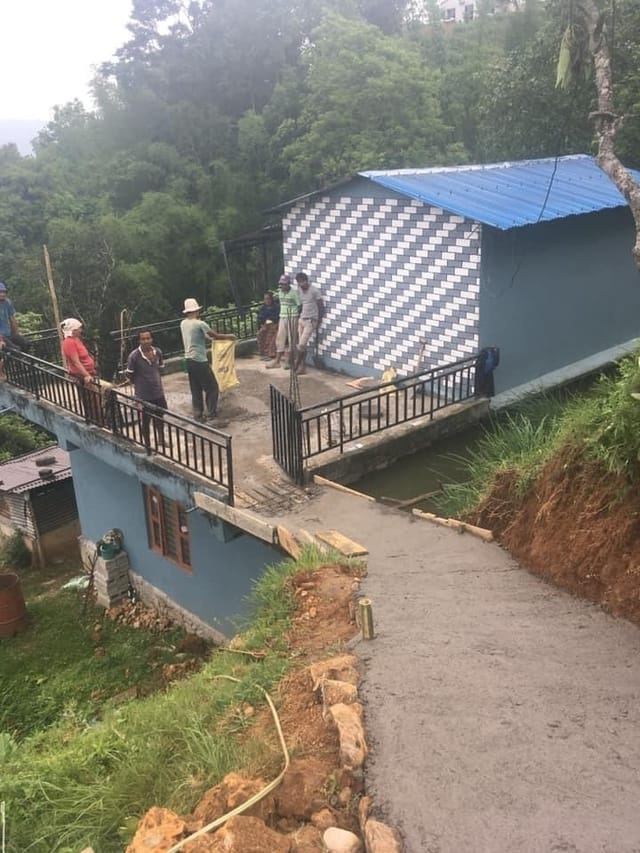
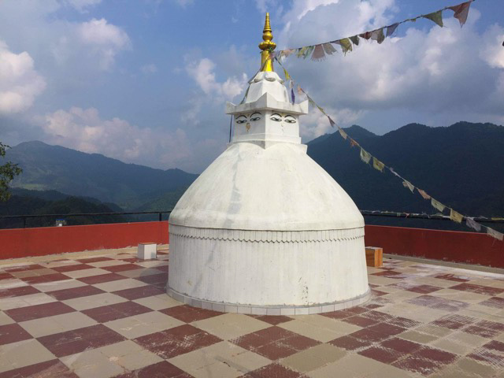
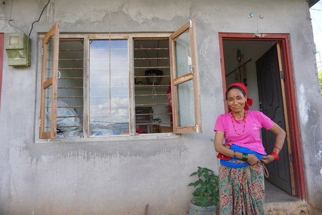
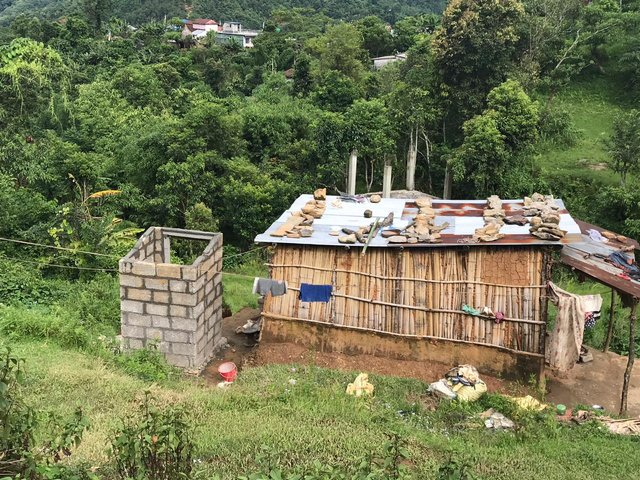
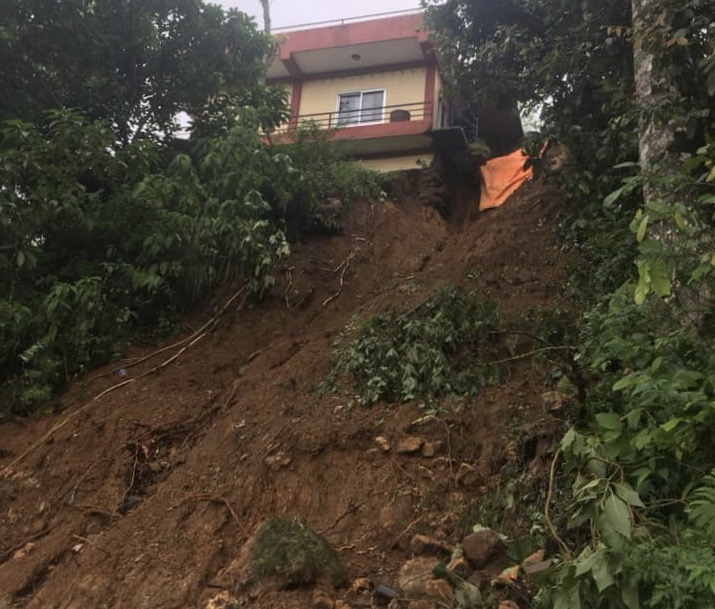

General
Establisment of Pachabhaiya Community Development Centre
This will be used to host a variety of educational and skill development workshops and programs. Management and Program coordination is on a volunteer basis, however we will provide income for local labour and workshop instructors.
Health
Medical Treatment
We have been able to help people with urgent medical and dental problems, including life saving treatment for a 2 year old boy with a serious kidney ailment. Without access to Government supported healthcare, many Nepali people cannot afford proper medical care.

Health
COVID-19 Food Drive
During the lockdown people were unable to work resulting in basic food shortages. We bought a ton of rice, a half ton of lentils and 300 liters of cooking oil and distributed it through the village with the help of our local partners, which was enough to provide many families over 2 months of basic food security until the local rice and lentil harvest.
Infrastructure
Construction and Home Repair Projects
We have been able to fund new construction and necessary home repairs on several houses in the village affected by the earthquake and severe monsoon damage. We have replaced roofs, built new kitchens and renovated living spaces to strengthen walls and foundations.


Infrastructure
Pathway and Stair Restoration
We have been able to provide improvements in pathways and build stairways, improving the local infrastructure for safer mobility, especially for the elderly and children.
General
Craftmanship
Tools purchased for village workers. We provided stone and woodworking tools to local crafts people
Infrastructure
Gumba Stupa
Repairing the roof of the Gumba Stupa Buddhist Temple, damaged from monsoon rains. An important cultural and spiritual centre. The majority of the labour was done by volunteers from the village.


Infrastructure
Window Installation
A local family was enduring the monsoon seasons, year after year, without any protection from the elements. Insects, weather, and snakes were a constant threat to this family's safety. We purchased and installed new windows. They are now safe, dry and happy.
Health
Sanitary Facilities
We have ensured that all households in the village have proper bathroom facilities


Infrastructure
Landslide Restoration
Restoring and repairing damage cause by landslides during the 2020 monsoon season. We also made some reinforments on at risk homes.